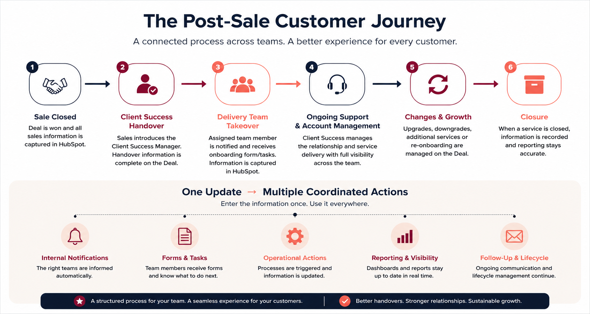

A connected post-sale operating model across Sales, Client Services, Delivery and Account Management, with the CRM acting as the shared source of truth.
Post-sale activity relied too heavily on manual communication, separate updates and individual team knowledge. That made handovers less consistent and reduced visibility once the sale moved into delivery.
Enter the information once. Use it everywhere.
The goal was to capture the right customer and service information in the CRM, then use it to coordinate notifications, tasks, reporting and ongoing lifecycle activity.
A portfolio visual showing the operating model from Sale Closed through Closure, including the coordinated actions that sit underneath each stage.

Process design visual. It explains the operating model without exposing confidential CRM records or customer data.